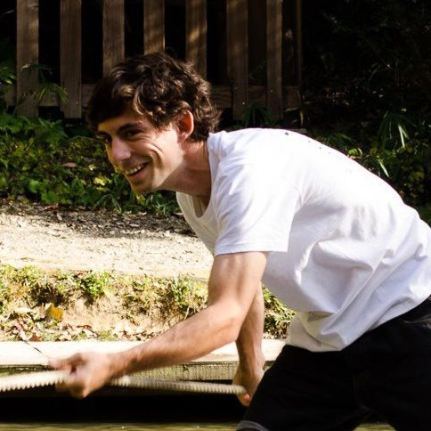

Homepage of Alexandre Kaspar

I am a recent PhD from MIT CSAIL, now working as a principal software engineer at Kniterate, Inc. where I develop digital tools for computational weft knitting and on-demand garment production.
Until now, I worked as a research assistant in the Computational Design and Fabrication Group of Professor Wojciech Matusik.
Previously, I obtained a bachelor and master's degrees from EPFL where I worked in the Computer Graphics and Geometry laboratory of Professor Mark Pauly.
My interests span digital and physical fabrication, computer graphics and vision, machine learning and HCI.
You can find my latest CV here.
PhD Thesis
PhD Thesis
MIT DSpace
Slides (Google)
Slides (PDF)
Publications
Knit Sketching: from Cut & Sew Patterns to Machine-Knit Garments
Alexandre Kaspar, Kui Wu, Yiyue Luo, Liane Makatura, Wojciech Matusik
SIGGRAPH 2021
Knitting Skeletons: Computer-Aided Design Tool for Shaping and Patterning of Knitted Garments
Alexandre Kaspar, Liane Makatura and Wojciech Matusik
UIST 2019
Inverse Neural Knitting: From Images to Manufacturing Instructions
Alexandre Kaspar*, Tae-Hyun Oh*, Liane Makatura, Petr Kellnhofer, Jacqueline Aslarus and Wojciech Matusik
ICML 2019
On Learning Associations of Faces and Voices
Changil Kim, Hijung Valentina Shin, Tae-Hyun Oh, Alexandre Kaspar, Mohamed Elgharib and Wojciech Matusik
ACCV 2018
Crowd-Guided Ensembles: How Can We Choreograph Crowd Workers for Video Segmentation?
Alexandre Kaspar, Geneviève Patterson, Changil Kim, Yagiz Aksoy, Wojciech Matusik and Mohamed Elgharib
ACM CHI, 2018
Color Contoning for 3D Printing
Vahid Babaei, Kiril Vidimce, Mike Foshey, Alexandre Kaspar, Piotr Didyk and Wojciech Matusik
ACM SIGGRAPH, 2017
Foundry: Hierarchical Material Design for Multi-Material Fabrication
Kiril Vidimce, Alexandre Kaspar, Ye Wang, Wojciech Matusik
ACM UIST, 2016
Gradient-based 2D-to-3D Conversion for Soccer Videos
Kiana Calagari, Piotr Didyk, Mohamed Elgharib, Alexandre Kaspar, Mohamed Hefeeda and Wojciech Matusik
ACM Multimedia, 2015
Self-Tuning Texture Optimization
Alexandre Kaspar, Boris Neubert, Dani Lischinski, Mark Pauly and Johannes Kopf
Computer Graphics Forum (Proceedings Eurographics), 34(2), 2015
Interactive Design Exploration for Constrained Meshes
Bailin Deng, Sofien Bouaziz, Mario Deuss, Alexandre Kaspar, Yuliy Schwartzburg and Mark Pauly
Computer-Aided Design 61: 13-23, 2015
Realtime Deformation of Constrained Meshes on GPU
Alexandre Kaspar and Bailin Deng
In GPU Computing and Applications, 15-34. Springer Singapore, 2015
Links
RPRPM
HTMAA
Github
Scholar
CV